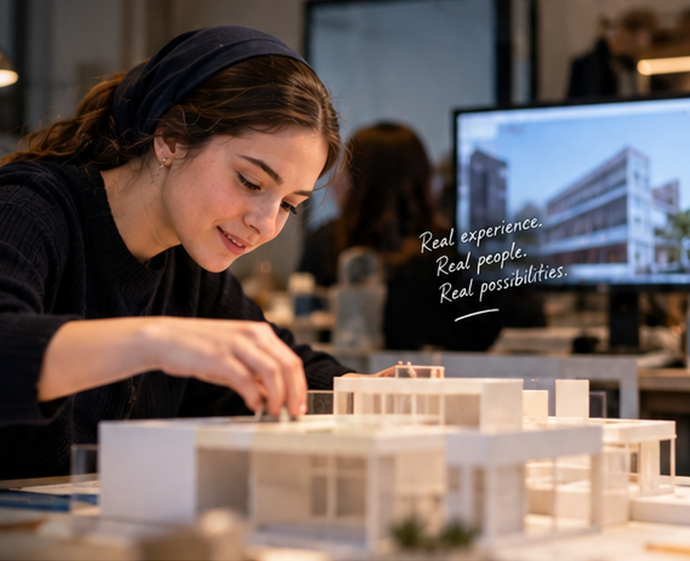

01 / Career discovery
01 / Career discoveryPROPOSED EXPERIENCE · NOT SCHEDULED
Inside an architecture studio
See the early sketches, the models, and the decisions that turn an idea into a place people use.

Sample sceneStep inside. Ask questions. Try something you never thought you could.
For young Jewish women who want more than a job description. Discover careers up close, meet people who love what they do, and take on real challenges—with room for Shabbos, kashrut, and Jewish life.
You don't need a five-year plan. Tell us what sparks your curiosity—we'll use your ideas to help shape future experiences.
Exploring is free. Where an experience is still an idea, we'll say so.
Choose any that interest you
Continue to my interestsYou're registering interest, not applying for a confirmed position.
Curiosity looks different for everyone. Here's what a professional experience could look like. Tell us which doors you'd love to see opened.
01 / Career discoveryPROPOSED EXPERIENCE · NOT SCHEDULED
See the early sketches, the models, and the decisions that turn an idea into a place people use.
 02 / Applied experience
02 / Applied experiencePROPOSED CHALLENGE · NOT SCHEDULED
Work through a design challenge, test a concept, and present your thinking to a professional advisor.
 03 / Professional connection
03 / Professional connectionROLLING INTEREST · AVAILABILITY VARIES
Talk with a founder or professional about the choices, skills and surprises that shape their work.
 Sample scene
Sample sceneProfessional exploration should fit into Jewish life—not force you to choose between them. We're designing experiences with Shabbos, kashrut, and religious schedules in mind.
Our starting focus is young Orthodox women, while welcoming Jewish women from different backgrounds and levels of observance.
Discover our approach Sample scene
Sample sceneYour team already does work that someone out there dreams of understanding. A focused visit, an expert conversation, or a hands-on brief could become her first real look inside the industry.
We’ll shape a manageable experience with your team, agreeing on access, timing, and responsibilities before anything is confirmed.
Explore professional partnerships